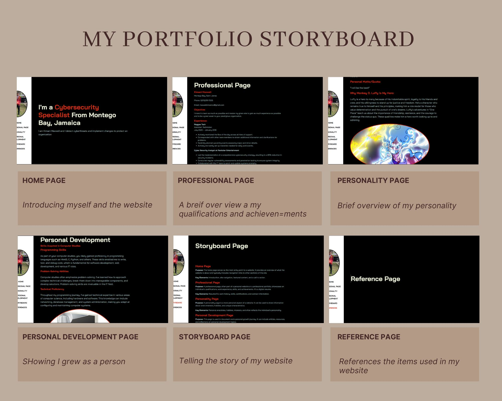

I am Kimani Maxwell and I detect cyberthreats and implement changes to protect an organization
Montego Bay, Saint James
Phone: 1(876)797-7555
Email: maxwellkimanixx@gmail.com
I intend to learn as much as possible and master my given role to gain as much experience as possible and to be a great asset to your prestigious organization.
Reggae Tech
Assistant Technician
July 2020 – January 2019
Cyber Security Analyst at Rockstar Entertainment
Network Security Enhancement Project
Incident Response Automation
Montego Bay Community College
Associate in Modular in Computer Studies
Cornwall College
9 CSEC Subjects – Two 1’s, Six 2’s, One 3
University of Technology
Bachelor's in Computer Science
Available upon request
"My mission is to safeguard digital landscapes through proactive cybersecurity measures, continuous vigilance, and expert knowledge, ensuring the confidentiality, integrity, and availability of critical information assets. Our mission is to protect organizations and individuals from cyber threats, promoting a secure and resilient digital world."
"My vision is to be the leading force in cybersecurity, setting the standard for excellence in safeguarding digital ecosystems. We envision a future where cybersecurity is not just a defense but a foundation for innovation and trust. Our vision is to empower businesses and individuals to thrive in a secure and interconnected world, setting new benchmarks for cyber resilience and protection."
I have a strong passion for gaming. While it may not seem directly related to academics, gaming has taught me important skills like strategic thinking, problem-solving, and teamwork. These skills have been beneficial in my academic life, especially in group projects and critical thinking exercises.
In this scene, Luffy boldly proclaims that he will find the legendary treasure known as "One Piece" and become the Pirate King, the most prestigious title in the world of pirates. He raises his straw hat, which symbolizes his identity, and states his intention to challenge the Grand Line, face powerful foes, and explore uncharted waters.
"I will be the best!"
Luffy is a hero to many because of his indomitable spirit, loyalty to his friends and crew, and his willingness to stand up for justice and freedom. He's a character who remains true to himself and his principles, making him a role model for those who value determination and the pursuit of one's dreams. Luffy's adventures in "One Piece" teach us about the importance of friendship, resilience, and the courage to challenge the status quo. These qualities make him a hero worth looking up to and admiring.
As part of your computer studies, you likely gained proficiency in programming languages such as Html5, C, Python, and others. These skills enabled me to write, test, and debug code, which is fundamental for software development, web development, and various IT roles.
Computer studies often emphasize problem-solving. I've learned how to approach complex technical challenges, break them down into manageable components, and develop solutions. Problem-solving skills are invaluable in the IT field.
Throughout my programming journey, I've gained technical expertise in various areas of computer science, including hardware and software. This knowledge can include networking, database management, and system administration, making you adept at configuring and maintaining computer systems.
To reach your goals, it's crucial to plan ahead by writing them down. Chapter 4 of "Twelve Pillars" emphasizes setting goals in advance and developing strategies to achieve them. Putting your goals on paper not only challenges you but also motivates you to work towards your future.
Chapter 5 stresses the importance of valuing time, considering it as a precious resource that should not be squandered. Many people often spend time on unimportant tasks, leading to poor time management. Time is irreplaceable, so prioritizing essential tasks leads to a stress-free and fulfilling life, ensuring no regrets in the end.
Your companions play a significant role in shaping your personality and potential. The people you associate with define who you are. It's vital to maintain positive relationships with goal-driven individuals who inspire and motivate you to improve.
Continuous self-education is essential for personal growth and development in both health and spirit. Life is an ongoing learning process, and every day provides opportunities to acquire new knowledge. One effective way to be a lifelong learner is by reading books and observing successful individuals.
Purpose: The home page serves as the main entry point to a website. It provides an overview of what the website is about and typically includes navigation links to other sections of the site.
Key Elements: Introduction, site navigation, featured content, and a call to action.
Purpose: A professional page, often part of a personal website or a professional portfolio, showcases an individual's qualifications, work experience, skills, and achievements. It's a digital resume.
Key Elements: Resume/CV, work history, skills, certifications, and contact information.
Purpose: A personality page is a more personal aspect of a website. It can be used to share information about one's interests, hobbies, and unique characteristics.
Key Elements: Personal anecdotes, hobbies, interests, and often reflects the individual's personality.
Purpose: This page is used to document one's personal growth journey. It can include articles, resources, and reflections on personal development topics.
Key Elements: Articles on personal development, self-improvement tips, goal-setting, and reflections on personal growth.
Purpose: Storyboard pages are often used in creative fields like film, animation, or graphic design. They visually outline the sequence of a story, film, or project.
Key Elements: Visual or textual representations of the project's storyline, scenes, or key moments.
Purpose: A references page is typically found in academic or research-related websites. It lists the sources and references used in the content, providing credibility and supporting further research.
Key Elements: Citations, links to external sources, and a bibliography.
Black backgrounds create a sleek and modern look for a website. They are often associated with sophistication and elegance. Additionally, black provides a strong contrast that can make other colors and content stand out more effectively. This can improve readability and make visual elements pop.
White is a clean and minimalist color. It symbolizes purity and simplicity, making it ideal for text and navigation elements. White text on a black background is highly readable and offers a sharp, high-contrast look. The navigation bar, in particular, should be easy to locate and navigate.
Red is a vibrant and attention-grabbing color. It can be used to draw attention to specific words or elements on the website. Red is often associated with passion and excitement, making it a great choice for accenting important information. Using red for picture borders can make images stand out and create a visual focal point.
Rohn, J. & Widener, C. (2015). Twelve Pillars: A Novel Chapters 4-7. https://store.jimrohn.com/twelve-pillars.html
(No specific author). (No specific year). Luffy Gear 5 One Piece 4K. https://www.uhdpaper.com/2023/06/luffy-gear-5-one-piece-4k-6121l.html
(No specific author). (No specific year). Keirsey Temperament. https://profile.keirsey.com/#/temperament